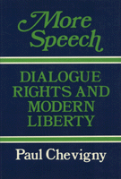

A ground-breaking argument for free speech and related procedural rights
A ground-breaking argument for free speech and related procedural rights


 A ground-breaking argument for free speech and related procedural rights
A ground-breaking argument for free speech and related procedural rights

|  |
More SpeechDialogue Rights and Modern LibertyPaul Chevignycloth EAN: 978-0-87722-514-0 (ISBN: 0-87722-514-1) |
"Rights to free expression receive here one of the strongest and most thoughtful defenses available. Chevigny builds his case without relying on the individualist assumptions of Anglo-American political thought, and in doing so, offers unusually interesting and persuasive arguments. This is a book that should be read by all sides of the various free speech debates."
—Virginia Held, CUNY and author of Rights and Goods: Justifying Social Action
Drawing on modern philosophy of language and on cognitive psychology, Paul Chevigny constructs a ground-breaking argument for free speech and related procedural rights. He makes a case for maximum freedom of expression on the part of individuals and for a corresponding sharing of information on the part of governments, seeing this "dialogue" as a basic right. In emphasizing the need for open inquiry, he focuses on language as the means by which human beings can work together to solve social and political problems. Besides placing his ideas in relation to those of earlier political philosophers—notably, John Stuart Mill—Chevigny incorporates insights from such recent and contemporary theorists as Ludwig Wittgenstein, W.V.O. Quine, Jean Piaget, Lawrence Kohlberg, and Carol Gilligan.
The author argues that "there can be no understanding, no rational decision-making, without open discussion. Society needs the discussion for the same reasons the individual does, and needs to devise means to pull people into the discussion in order to find new contexts and new answers for problems." He proposes a definition of "modern rationality" as the ability to entertain alternatives, to take a fresh point of view, and insists that the rational approach to interpretation is the one that supplies us with new arguments.
Chevigny’s approach is a practical one: he demonstrates that it is in the interest of government, both for the solution of policy problems and for the maintenance of authority, to recognize the right of free expression. The government that refuses to do so for whatever reason, he asserts, will eventually pay the price.
"Chevigny’s question is a fundamental one: Does the case for free expression depend upon relatively parochial premises of Anglo-American liberal thought or can it be made persuasive to a much wider (if not infinitely wide) audience? More remarkable still, Chevigny does deliver on his promise: the 'modernist,' anti-essentialist, understanding of language that stands at the bottom of his argument is indeed different from the standard individualist defenses of free speech. The book is also notable for its broad range of concerns..."
—Bruce A. Ackerman, Beekman Professor of Law and Philosophy, Columbia University
Paul Chevigny is Professor of Law at New York University School of Law.
Political Science and Public Policy
Philosophy and Ethics
© 2015 Temple University. All Rights Reserved. This page: http://www.temple.edu/tempress/titles/522_reg.html.